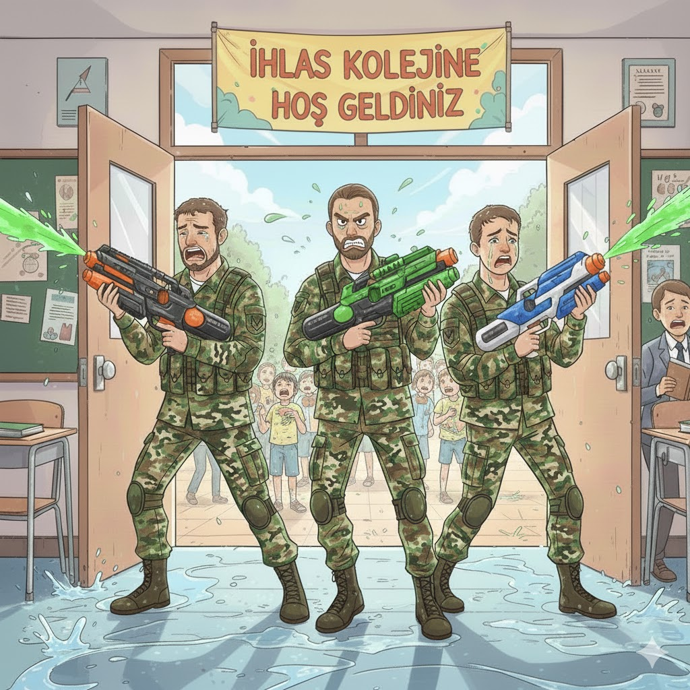
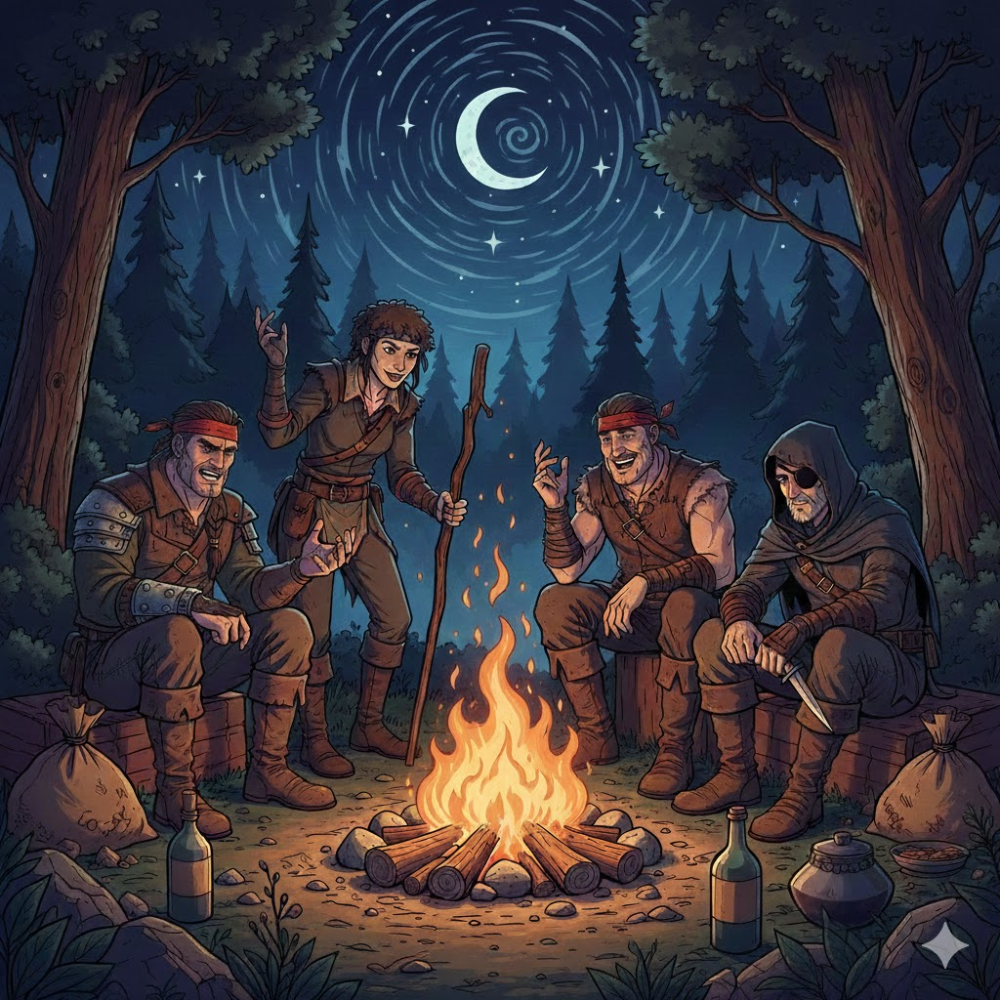

Sizin için güncel olan macerayı seçerek karakterlerinizi ve notları kontrol edebilirsiniz.

Sistem: FATE Condensed. Okul yönetimi ve öğrencilerin, beklenmedik bir saldırıya karşı hayatta kalma ve sivilleri koruma mücadelesi.
Oyun günlüğünü görmek için tıklayın.

Sistem: Dungeons & Dragons. Kışla'dan kaçan haydutların, soylulara karşı yürüttüğü isyan ve intikam dolu fantastik yolculuk.
Oyun günlüğünü görmek için tıklayın.